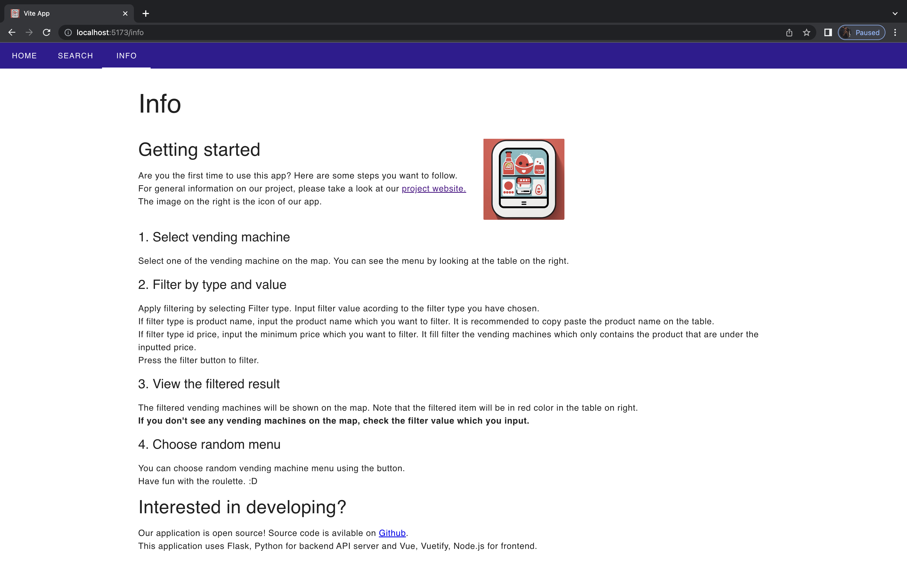

This app's objective is to give users a simple way to locate nearby vending machines and obtain pertinent details including menu items, costs, and other essential data. For easy accessibility across various devices, the app will be developed as a website.
before you setup, Make sure you have installed Node.js and `npm` command is avilable.
I recommend installing Node.js with [nvm](https://github.com/nvm-sh/nvm).
For details, please read README.md in source code.
Home Screen
Seach Screen
When a Marker is Clicked
Filter by Product Name
Filter by Price
Filter by Casheless Payment
Random Select
Info Screen
Aplication Icon
Application Features
The vending machine app will include the following core features:
Geolocation and Routing:
The app utilizes the device's GPS to identify the user's current location.
Users can easily find nearby vending machines on a map.
The app provides optimized routes to reach the selected vending machine, taking into account walking or driving directions.
Search Functionality:
Users can search for specific drinks or foods available in vending machines.
The search feature allows users to filter results based on drink or food preferences, such as snacks, beverages, healthy options, etc.
Users can also search for vending machines based on price range, helping them find options within their budget.
Random Selection:
For users who have trouble deciding what to drink or eat, the app offers a random selection feature.
The button randomly suggests a drink or food item available in nearby vending machines, adding an element of fun and surprise to the user experience.
ICT Card Compatibility:
Users can search for vending machines that accept ICT (Integrated Circuit Technology) cards, such as contactless payment methods or specific loyalty cards.
This feature helps users locate vending machines where they can conveniently make payments using their preferred payment methods.